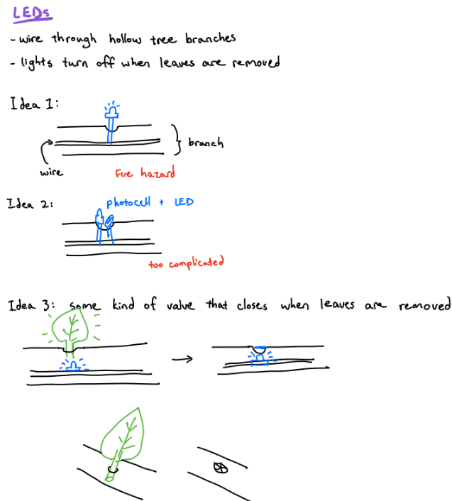

For this project we were tasked with creating a sculpture inspired by a book of choice. After a brainstorming session of our favourite books, we settled on the play Waiting for Godot by Samuel Beckett. We were intrigued by the premise of two people waiting for something that never happens and the imagery of a withered tree anchoring the scene.
We chose to explore themes of human existence and absurdism in the book and what better way to do that than putting the audience in the shoes of the characters? Thus our design case to be - a tree with two chairs underneath. The audience becomes “actors” in the scene; the authors of their own play. The tree has leaves with prompts on them for the “actors”.
The sculpture is intended to work as follows: the timer on the sign counts up until two people sit down, in which the text changes to say “Enjoy the show!” If someone gets up too soon, they are met with boos to compel them to sit back down and explore the sculpture more. When at least one person stands up again, they may be met with a round of applause. We originally also planned to light up the tree when the show begins and have them dim as leaves are plucked from the tree, but scrapped the idea (more on that later).
Technical requirements for electronics were straight forward:
The 3 components I needed to work on was an occupancy sensing mechanism for the chairs, tree lighting, and the screen display. An arduino was the obvious choice for controlling the components.
Below are some of my notes on choosing sensors and implementing the interactions.

In the end the light up leaves were scrapped because we felt it was not central to the message of our sculpture to justify the tremendous work needed to implement properly. For occupancy sensing on the chairs, I went with force sensing resistors as they were straight forward to use - I obtained the long strip ones to span across the seat. After tesing out a few weights I set a liberal threshold to reasonably distinguish between a person vs. a backpack on the chair.
Waiting, 2023
Materials
Book, magazine pages, cardboard, adhesives, 3D printed material, twine, plastic buckets,
Arduino, speaker, amplifier, force sensitive resistors, LCD & SD shield, resistors, wires
Artist Stement (Shortened)
The play Waiting For Godot by Samuel Beckett follows two men who convene under a tree everyday to
wait for the mysterious Godot to give them a sense of purpose. They pass the time by chatting,
arguing, and entertaining themselves with absurd antics. Despite this, Godot never arrives and
they find themselves in a never-ending cycle of waiting.
Our sculpture Waiting recreates the setting of the story – a ragged tree and two stools for the
characters. There is a sign on the tree that counts the time to the next showing of the play,
waiting for the viewers to complete the scene. By putting the viewers in the same situation as
the characters in the play, they are faced with the same questions surrounding existence: What
are we supposed to do? Do we wait for something to happen or leave? The sculpture aims to question
the agency of the individual in a world of uncertainty, and to challenge the viewer to consider
their own relationship to time and the meaning they assign to it.
Our original design with proper chairs, sculpted tree and flashing lights were replaced with buckets and paper-mâché. As we worked on the piece, we felt that more organic and abrasive materials, form, and texture was more congruent to the nature of human interactions and the setting of a stage play. The dangling leaves fluttered in the air conditioned gallery, adding another dimension of movement to our scultpure.